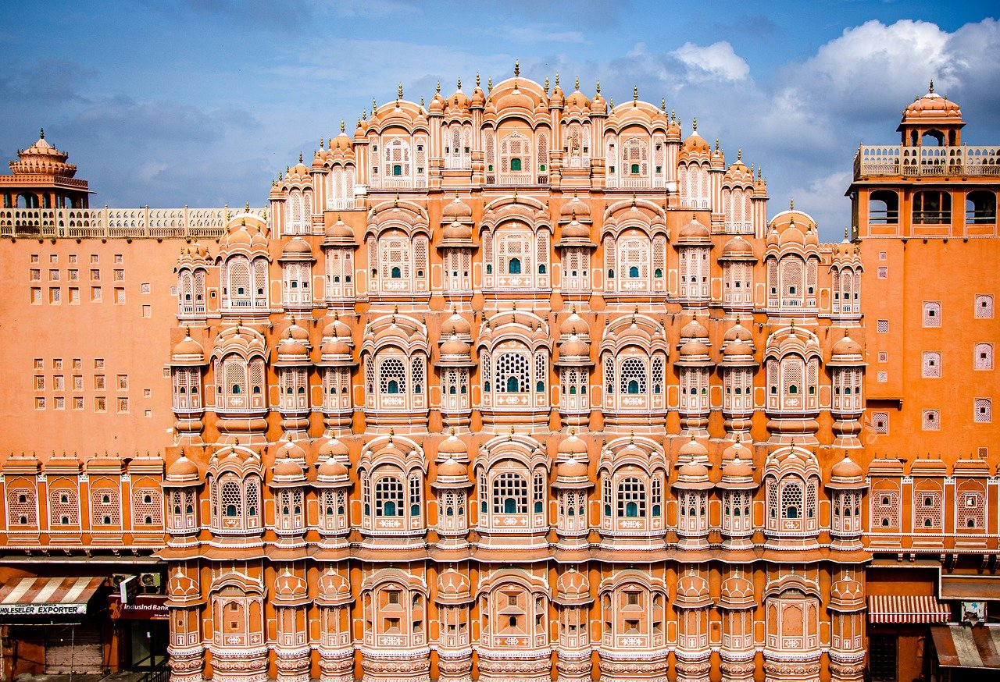

A powerhouse of people power, India pushes forward into the modern era,
creating cities that are a beguiling hotchpotch of urban innovation.
Technology, money, poverty and ancient structures blend in the developing cities

|

|
Mumbai, previously known as Bombay is one of the most populous and biggest cities of Maharashtra. Also the biggest metropolis of this state, Mumbai is also popular as the entertainment and financial capital. It is the largest city of India and fondly called as the city of dreams. It is a place filled with dreamers and people who work hard day and night to achieve their dreams.
Mumbai is well known for being a city on the edge – its slums overflow with life as its skyscrapers soar to the sky. This strange and extraordinary blend of rich and poor creates a city that strives to move India forward – this most populated city in India has to be seen to be believed.
The center for India’s creative culture, fashion, food and finance, Mumbai has some of the most expensive homes in the world and some of the biggest slums in Asia. This beguiling composite of Indian proportions is where the gateway to India is located – a stone arch built on the waterfront in 1923. Take a trip out of town for some time out and visit the cave temple complex of Elephant Caves.
|  |

|
Jaipur is Rajasthan’s biggest city and its capital. It is known (somewhat incorrectly) as the Pink City due to the distinct color of its buildings. The ‘pink’ of the Pink City is Gerua (or ochre) in which the city was coated during the visit of the Prince of Wales in 1905-06. Jaipur is known as much for its fascinating monuments and colorful markets as it is for its gorgeous handloom garments and wonderfully laid-out gardens.
The Pink City of Jaipur is the capital of Rajasthan and is where you can find the beautiful Amber Fort – a sprawling, stunning complex set in the hillside overlooking a lake. Located just outside of the city and built in 1592, the grandiose citadel was also a palace for some time but is now an impressive tourist attraction.
Make sure to take a trip to the opulent city palace with its stunning courtyards and gardens, plus the amazingly intricate Palace of Winds. Not only does it attract domestic travelers, Jaipur is often an important stopover for foreign tourists. Jaipur also serves as a stepping stone for those who want to travel to the interiors of Rajasthan.

|
Delhi National Capital Region or NCR includes New Delhi and the urban areas surrounding it in neighboring states of Haryana, Uttar Pradesh and Rajasthan. Delhi NCR is India’s largest agglomeration (or town area) and one of the world’s largest with a population of over 47,000,000 according to the 2011 Census. It contributes 7.5 per cent to India’s GDP.
Delhi is surging mix of crumbling history, gleaming modernity and, of course, traffic. The Indian capital has long held a reputation as being jammed full of life – a place where the past and the future combine. Despite of – or perhaps because of – its cramped streets, packed markets and overflowing train stations, Delhi has a lot going for it.
The astonishing patchwork of people and culture provides a tempting combination for many visitors, who travel to the city to absorb the frenzied Indian atmosphere.
Visit the 17th-Century Red Fort and be awestruck by the scale of the Mughal architecture. Then take a tuk-tuk to Delhi’s Jama Masjid, where you can soak up the peaceful atmosphere and be greeted by a wealth of welcoming smiles. Climb to the top of the mosque’s tower for a small fee and catch a view of the city from above.